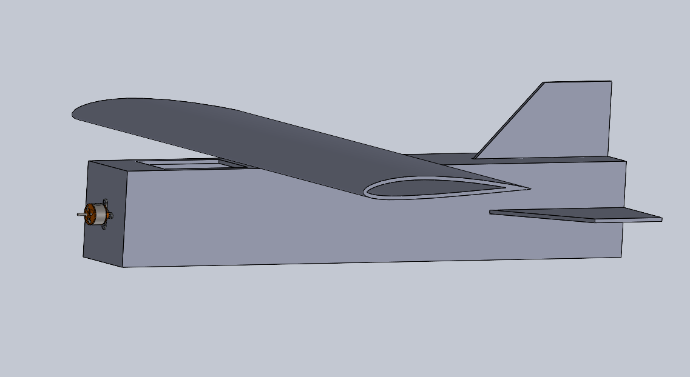
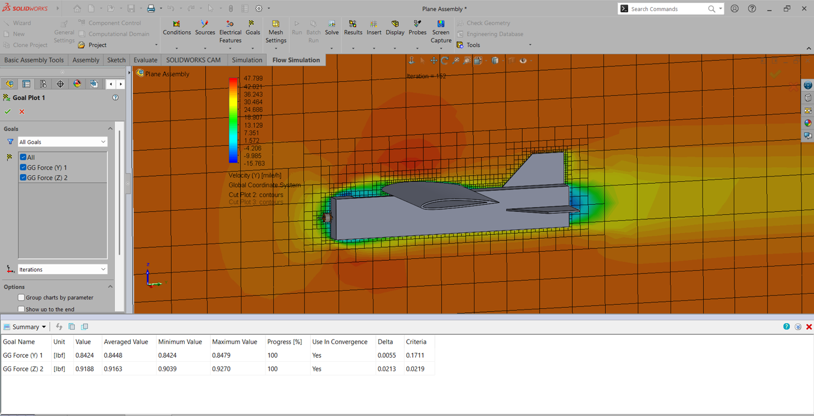

Portfolio — Sheet 1 of 1
ANTHONY J. RUSSO
Mechanical Engineering student at Messiah University. I design things in CAD, then go find out what I got wrong by actually building them.
Projects
RC Airplane — Independent Design Build
REV. A — V2 IN PROGRESSDesigned a fixed-wing RC aircraft from scratch — picked the airfoil, modeled it, simulated it, then built and flew it. Selected the NACA 2412 airfoil in XFLR5 for its forgiving stall characteristics, modeled the full airframe in SolidWorks, and ran Flow Simulation to check wing airflow before cutting any material. Built from foam board and off-the-shelf RC parts to keep it cheap to iterate on. First flight didn't go well — slack in the servo-to-control-surface linkages meant mid-flight corrections weren't translating properly, which led to some crash landings. Diagnosing that is what's driving the V2 redesign now: tighter linkages, better servo mounting.



Dovetail-Joint Shot Put Circle
REV. C — IN PROGRESSA personal project merging my background in varsity shot put and discus with mechanical design. Designed a dovetail-jointed circle in SolidWorks, then iterated the design several times around material availability and a fixed budget before fabricating it by hand from OSB and plywood. No prior tolerancing experience going in — cut the joint oversized and hand-filed it down to a snug fit, which turned into a real lesson in fit-and-finish that a drawing alone doesn't teach you.
BUV Crimper — Collaboratory Team
VOLUNTEER — '25–'26Collaborating on a mechanical crimping system mounted to a Basic Utility Vehicle (BUV) for use in Kampala, Uganda. Producing technical drawings for parts manufactured in the school shop, and sourcing budget-conscious local parts — including Toyota Tacoma wheels and square tubing — to hit project cost constraints.